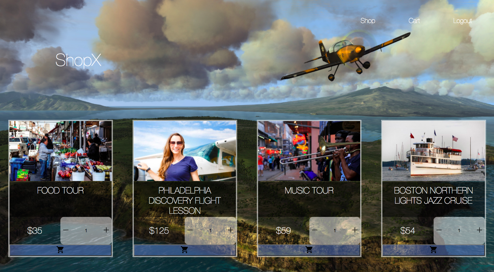

Hi, My name is Ekaterina or Katya for short. I have background in
international law and e-commerce and am now pursuing a career of
software developer.
I began my career as paralegal and worked my way up to legal
counsel. After several years of practicing corporate law I then
moved to New York and started considering new opportunities. That’s
when I met the founder of Mend After Cancer, a cancer recovery
online store and community.
I started working at Mend as a consultant doing a variety of
different jobs, gained a better understanding of e-commerce and
worked very closely with the tech team. I’ve got inspired by the
team and I’ve learnt so much from them. At that point I couldn’t but
decide to switch my career and attend a coding bootcamp - Fullstack
Academy.
I have recently graduated from Fullstack Academy and am currently a
Senior Software Engineering Teaching Fellow there. I am very excited
for future opportunities and am looking forward to work as a
fullstack developer in a company with supportive culture and team
that’s passionate about the product that creates social good.
CookStars is a mobile App that challenges users to cook at home
by offering recipes and ranking users by earning points and
badges. We built Cookstars to help people save money and avoid
the frustration of planning by offering recipes weekly that they
can easily follow. These recipes are diverse and tailored
according to the user's dietary preference. The process of
cooking is made easy and entertaining with step-by-step
instruction and points awarded.
TECH STACK
Our app is built on React Native and utilizes the
Expo framework to allow for quick development and
iterations of the code base. For the database we used
Firebase, which provides our application the ability to
authenticate, retrieve and store data, and schedule API requests
in the background. The application also uses API called
Spoonacular to provide recipes on a weekly basis.
React Native
Expo
Firebase Firestore
Spoonacular API
Map For Action
MapForAction is a platform for taking action on incidents of
police violence and racial injustice. It brings together
information about incidents in an attempt to clarify them as
well as deliver clear actions to help support the victims and
movements associated with the situation. The map allows people
to discover incidents on location based as well as help
visualizing the areas that may have many incidents occur. That
way, law enforcement can also further investigate/take
action/prevent more crime in those specific areas.
TECH STACK
Map for Action utilizes Node.js on the backend and a
React front-end. In order to render the map portion of
the application, we utilized the Google Map API. The
Google Places API was also utilized with the autocomplete
feature so users could specify specific locations when
submitting incidents. Twitter posts utilized Twitter API
which allowed us to embed actual tweets inside our application.
Material UI was used as our main styling library.
React
Node.js
Mongoose
Express
Google Maps API
Twitter API
Material UI

ShopX
An experience e-shop that fulfills the urge of ‘buying something
new’ while saving the planet from extra junk we consume every
day.
TECH STACK
Work in progress. ShopX has a Node.js backend and a
React front-end. Users are able to place products in the
cart and complete the purchase. Material UI was used as
the main styling library.